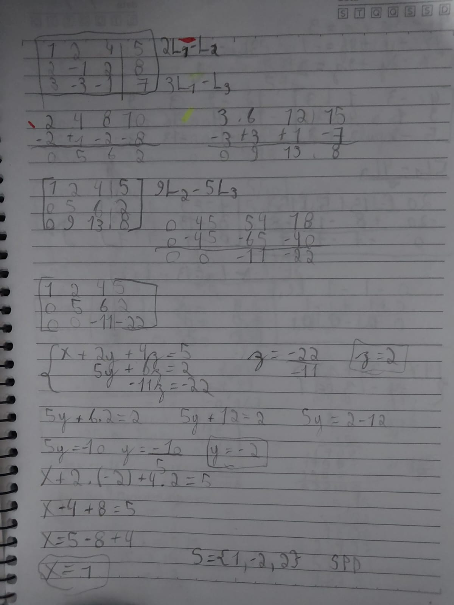

Sumário
Sistemas Lineares
Equações Lineares
São equações em que todas as incógnitas têm expoente 1 e aparecem de forma simples. Não podem existir termos como x², xy, etc.
Modelo geral: a₁x₁ + a₂x₂ + ... + aₙxₙ + b = 0
Exemplos de equações lineares: 2x + 4y - z = 4 -3p + 4q - 1 = 0
Não lineares: 3x² - 4x + 5 = 0 ; 2x + 3y³ = 2
Sistemas Lineares
Um sistema linear é um conjunto de equações lineares com as mesmas incógnitas.
Exemplo 2x2:
2x + 3y = 19
x - y = -3
Exemplo 3x3:
x + y + z = 6
2x - y + z = 3
x - y - 2z = -7
Classificação:
- SPD (Sistema Possível e Determinado) → 1 solução
- SPI (Sistema Possível e Indeterminado) → infinitas soluções
- SI (Sistema Impossível) → nenhuma solução
Sistemas Lineares 2X2
A solução de um sistema 2x2 é o ponto de intersecção das retas representadas pelas equações.
Exemplo:
2x + 3y = 19
x - y = -3 → Solução: (x, y) = (2, 5)
x = -3 + y 2(-3 + y) + 3y = 19 -6 + 2y + 3y = 19 5y = 19 + 6 y =25/5 y= 5
x = -3 + 5 x = 2
Possibilidades de representações gráficas:
- Retas concorrentes(se encontram em um ponto) → SPD
- Retas coincidentes(uma sobre a outra) → SPI
- Retas paralelas(não tocam) → SI
Sistemas Lineares 3X3
Um sistema 3x3 possui três equações e três incógnitas. Cada equação representa um plano no espaço em uma representação gráfica.
Exemplo:
x + y + z = 6
2x - y + z = 3
x - y - 2z = -7
As soluções representam pontos de interseção entre planos. Pode haver 1 ponto (SPD), infinitos pontos (SPI) ou nenhum (SI).
Relação entre Sistemas e Matrizes
Um sistema pode ser escrito como matriz, equação matricial A·X = B.
Exemplo:
Sistema: 2x + 3y = 19
x - y = -3
Forma matricial:
|2 3| |x| = |19|
|1 -1| |y| |-3|

O determinante da matriz dos coeficientes indica o tipo de solução:
- det ≠ 0 → SPD
- det = 0 → SPI ou SI
Método da Substituição/Adição
Exemplo Substituição:
x + y = 10 → y = 10 - x
2x - 3y + z = 3 → 2x - 3(10 - x) + z = 3 → z = 3 - 5x + 30
Método de Escalonamento
Consiste em manipular as equações até obter forma escalonada (com zeros abaixo da diagonal principal).
Exemplo:
Sistema original:
4x - 3y + z = 3
3x + y + 4z = -1
5x - 2y + 3z = 2
Após escalonamento:
4x - 3y + z = 3
3y + 2z = -2
-z = -2 z = 2, y = -2, x = -1,25
Matrizes e Criptografia
Matrizes Inversas
De ordem 2 usando sistemas
Resolve-se o sistema A·X = I, onde I é a matriz identidade. A solução X será A⁻¹.
De ordem 3 usando sistemas
Segue a mesma lógica, mas envolvendo sistemas maiores. O produto A·A⁻¹ = I deve ser satisfeito.
De ordem 2 usando determinantes - Regra Prática
Passos:
- Calcular o determinante da matriz
- Dividir todos os termos da matriz pelo determinante
- Trocar sinal dos da diagonal secundária, multiplicar por -1
- Trocar os elementos da diagonal principal de posição
De ordem 3 usando determinantes - Regra Prática
Método prático para a inversa de matrizes de ordem 3
- Calcular o determinante da Matriz
- Repetir as duas primeiras colunas da matriz a direita e repetir as duas primeiras linhas embaixo, ficando 5X5
- Cancelar a primeira linha e a primeira coluna
- Realizar vários determinantes 2X2 dentro da matriz
- Montar uma matriz 3X3 apartir dos determinantes
- Dividir todos os elementos pelo determinante
Retirado dos arquivos no sigaa
Criptografia
Como codificar uma mensagem por pares de símbolos, usando uma matriz de codificação e sua inversa (decodificação). A operação é por multiplicação de matrizes.
Tabela de conversão (30 símbolos)
| A | B | C | D | E | F | G | H | I | J | K | L | M | N | O |
|---|---|---|---|---|---|---|---|---|---|---|---|---|---|---|
| 1 | 2 | 3 | 4 | 5 | 6 | 7 | 8 | 9 | 10 | 11 | 12 | 13 | 14 | 15 |
| P | Q | R | S | T | U | V | W | X | Y | Z | . | , | _ | ¬ |
|---|---|---|---|---|---|---|---|---|---|---|---|---|---|---|
| 16 | 17 | 18 | 19 | 20 | 21 | 22 | 23 | 24 | 25 | 26 | 27 | 28 | 29 | 30 |
Fórmulas importantes:
Matriz criptografada = Matriz Inventada * A Matriz
Descriptografar: Matriz Inventada → Matriz inversa → Matriz inversa * Matiz criptografada → Matriz original
Exemplo completo — codificação por matrizes
Matriz codificadora e sua inversa det=1:
A = |5 7| A^{-1} = | 3 -7|
|2 3| | -2 5|
Mensagem: "OS NÚMEROS GOVERNAM O MUNDO."
Convertendo símbolos em números e organizando em matriz 2×n (por colunas):
M = [ 15 19 29 14 21 13 5 18 15 19 29 7 15 22 ]
[ 5 18 14 1 13 29 15 29 13 21 14 4 15 27 ]
Codificação:
N = [ 110 221 243 77 196 268 130 293 166 242 243 63 180 299 ]
[ 45 92 100 31 81 113 55 123 69 101 100 26 75 125 ]
Mensagem codificada: 110, 221, 243, 77, 196, 268, 130, 293, 166, 242, 243, 63, 180, 299, 45, 92, 100, 31, 81, 113, 55, 123, 69, 101, 100, 26, 75, 125.
Trigonometria nos Triângulos
Teorema de Pitágoras
Em todo triângulo retângulo: a² = b² + c² (com a hipotenusa e b, c catetos).
Exemplo: Se b=3 e c=4 → a² = 9+16=25 → a=5
Seno, Cosseno e Tangente
Definições em relação a um ângulo θ em triângulo retângulo:
- sen θ = cateto oposto / hipotenusa = CO/h
- cos θ = cateto adjacente / hipotenusa = CA/h
- tg θ = cateto oposto / cateto adjacente = CO/CA
Todos os ângulos entre 1 e 90 graus possuem seno, cosseno e tangente fixo, alguns são mais importantes como o do 30, 45 e 60.
Tabela de ângulos
| Ângulo | sen θ | cos θ | tg θ |
|---|---|---|---|
| 30° | 1/2 | √3/2 | √3/3 |
| 45° | √2/2 | √2/2 | 1 |
| 60° | √3/2 | 1/2 | √3 |
Cossecante, Secante e Cotangente
Cossecante, secante e cotangente são o contrário das operações de seno, cosseno e tangente
- cossec θ = h/CO
- sec θ = h/CA
- cotg θ = CA/CO
Exemplo
Num triângulo retângulo com hipotenusa 10 e cateto oposto em relação ao ângulo 6:
CO2 + 62 = 102
100 - 36 = CO² CO = √64 CO = 8
θ = 6/10 = 0,6 cos θ = 8/10 = 0,8 tg θ = 6/8 = 0,75

Avaliação
Acho que esse portfólio não ficou muito bom, os conteúdos até não são tão difíceis mas eu tive que arranjar o tempo com outras matérias o que acabou comprometendo meu desempenho nesse 2º trimestre. As atividades que foram feitas também foram bem interessantes, já tive contato com teorema de pitágoras no 8º ano mas aí não tinha números fracionados ou raiz no cálculo era um pouco mais fácil. Esse trabalho também teve muita influência dos arquivos no sigaa.